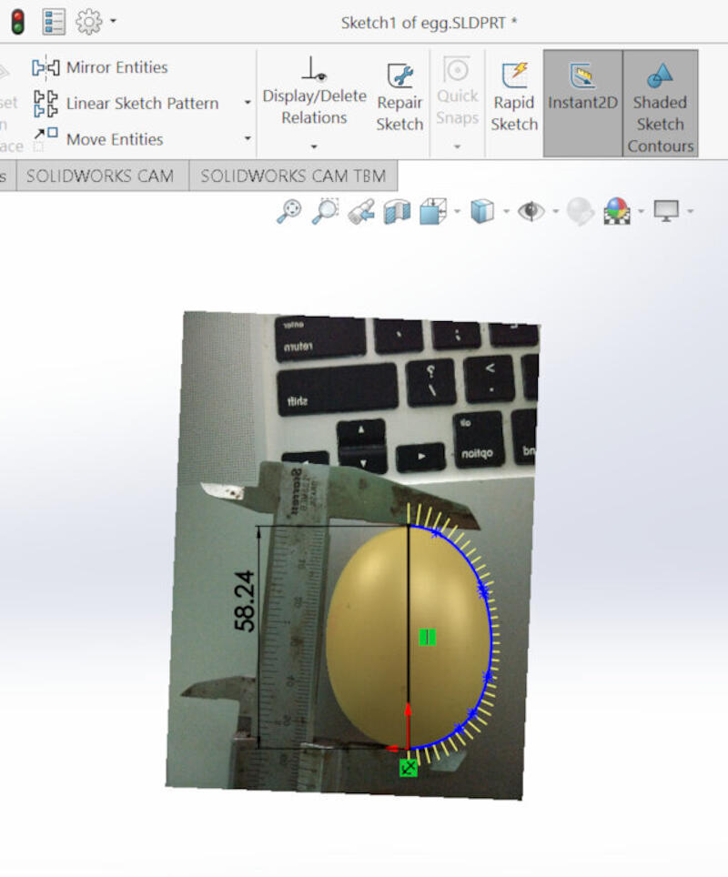
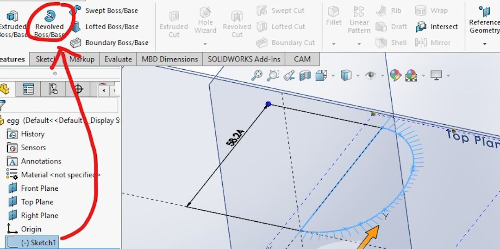
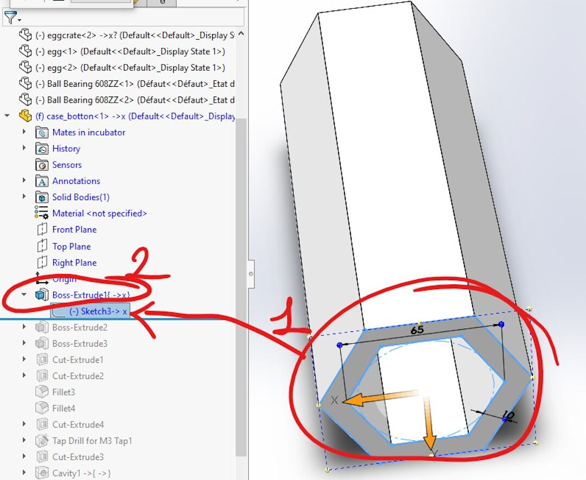
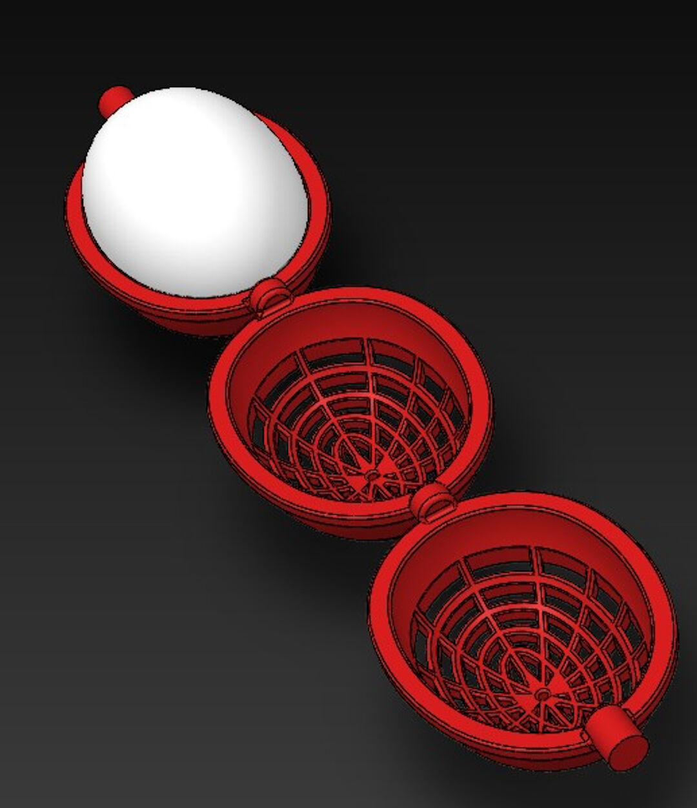
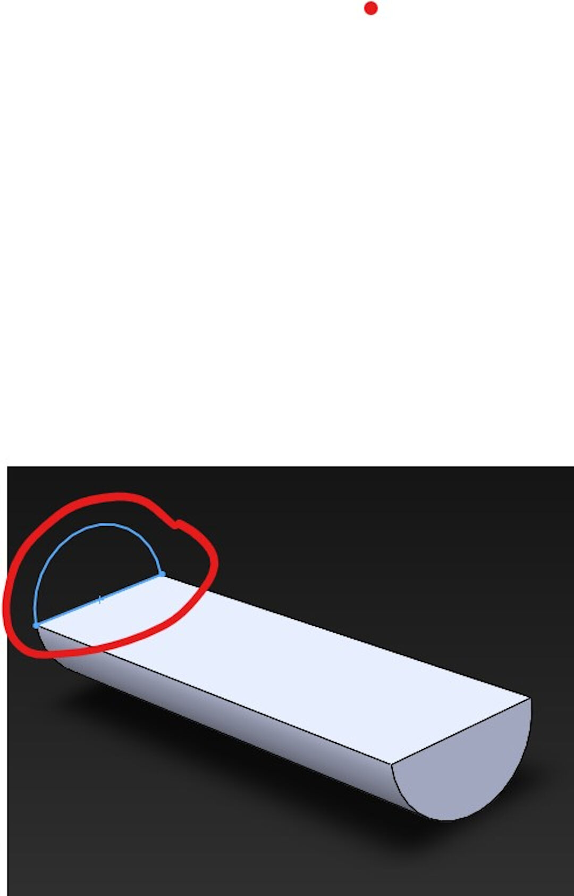
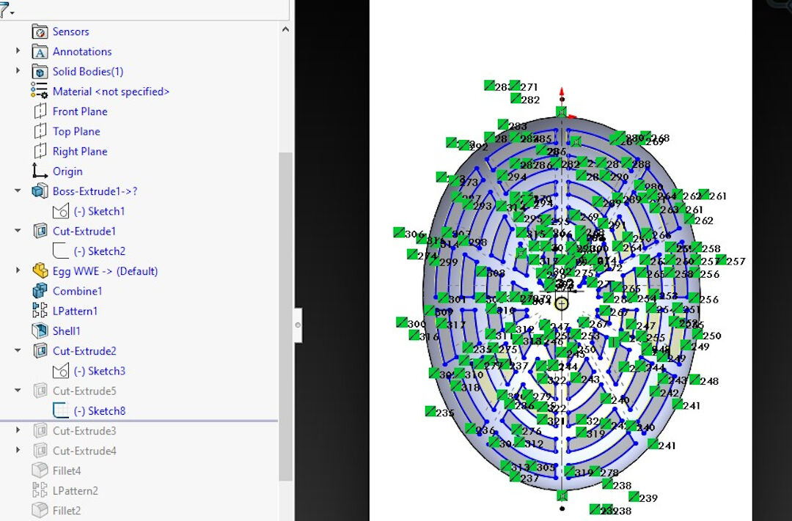
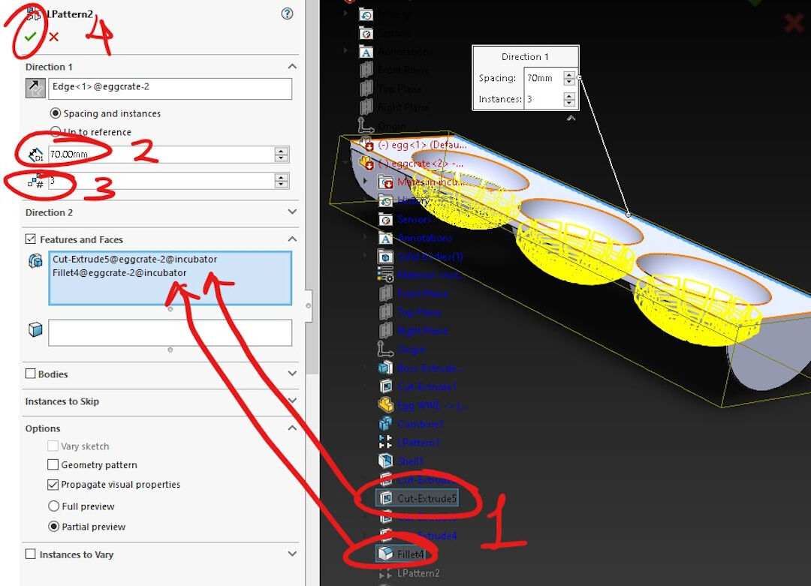
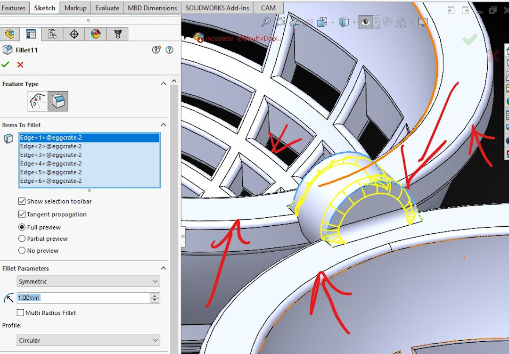

THIS PAGE IS OBSOLETE NEW PROJECT HERE!
Final Project Concept Update and Design Files
During week 2, I decided to change my project to one that is more in sync with farming needs.
I asked myself what I was needing right now for the farm that I couldn't just obtain.
Chickens!
For reasons I believe relate to the weather here in my region, there were no available chicks to be bought in the local farms cooperative, so I decided I would make a chicken incubator.
Design Files of My New Proposition
- Incubator file on Fab Academy Gitlab

Video Render and Link of My Possible Final Project Proposal Page
Details of My Final Project
SolidWorks has been my software of choice for the last years when it comes to mechanical design. I am very happy with it as it's powerful and allows quite complex assemblies while being intuitive enough for me to learn by using it.

Design Files of Final Project Proposal
- Incubator SolidWorks source files on FabAcademy Gitlab
Designed Parts
- Egg
- Case (top)
- Case (bottom)
- Egg Crate
- Heat Element
- Water
Downloaded Parts
- Fan Designed by Xgentec Jason at Grabcad
- Servo Motor Designed by Akshaya Simha at Grabcad
- Ball Bearing Designed by Hendricks at Grabcad
- Oled Display Designed by thmjpr at Grabcad
- Humidity Sensor Designed by Nonthanut Hoku at Grabcad
The Egg (Where It All Starts)
- In order to design my final project, I started with designing an egg.
- I took a picture of a real egg with the caliper for reference later in SolidWorks.

- To use the feature, start a new sketch then in the menu go to: Tools > Sketch Tools > Sketch Picture.

- After inserting the picture, scale it using the caliper reference as well as the blue ruler provided by SolidWorks.

- With the picture calibrated to scale, it's time to sketch around. For this, I used the spline tool and closed the spline with a construction line.

- Leave the Sketch and Click on Revolved Boss/Base.

- If the axis of rotation is not selected automatically, select the line that is in the center of the future egg. Press the green check mark.

- Voila, the virtual egg is made!

Bottom Case
Because of the number of steps, I will only detail the most important ones, specifying the type of operation in the beginning and then some of the steps to accomplish it.
- I started by sketching 2 hexagons and extruding them.

- Converting a contour of another object in an assembly:
- With the fan already mated with the sides of the case, I selected the outside contour of the fan and converted it, creating a sketch.
- Next, I cut the space for the fan.

- Screw wizard
- In type of Hole, I selected a simple hole as I will later tap the thread.
- In the standard, I selected ISO as it contains metric screws.
- In type of drill, I selected tap drill as this will give the right clearance to use a manual tap to open a thread later.
- Here I selected the size of the screw M3.
- Next, I clicked in position to determine where the holes will be located.

- Position of screw holes:
- The point sketch is normally selected already unless you had to create construction lines or other operations.
- Next, I centered each point on the locations where the fan will receive the screws. Last, confirm and close the operation, and the result will be holes created in the surface previously selected.

- Here is the result of the previous operation, the holes in place.

- Cavity, this operation is useful as it will save time designing many features that in this example will be simply inherited from the selected object or body:
- Simply start by either searching in the search menu for "cavity" or finding it on the "insert" "features" menu. After the feature is initiated, I selected the part I wanted to inherit the features, creating a kind of negative stamp in my part.
- Then simply confirm the operation.

- Here you see the part with the cavity already created.

- Here you see the cavity.

The Crate
- The crate was a bit complex to create.

- I started by extruding a cylinder.

- Next, I cut it in half by sketching a half circle on one of its faces.

- This time I used the combine feature instead of cavity.
- The main body should be already selected by default.
- Next, I selected the part I wanted to combine.
- In order to create a footprint, I selected the operation subtract.
- Last, select the confirmation check mark to finish the combine feature.

- Linear Pattern is a feature used to replicate in various directions a feature so it saves time instead of designing the pattern feature again and again:
- I started by selecting the pattern.
- Then I selected the distance between the patterns.
- Then I specified it to replicate it 3 times.
- Next, I confirm.

- Here I used the shell feature as I wanted to keep the contours but I wanted the interior to become empty. This was done simply by specifying the thickness, in my case 3mm, and I did not have to select the body as it was already selected before initiating the feature.

- Now in order to expose the previous feature, I cut the lower shell by sketching around the lower shell of the body.

- This was a simple cut feature with a complex sketch. The sketch was created by offsetting inwards the outer contour, drawing lines towards the center, and last trimming all the lines in order to form closed perimeters that were used to cut the shape.

- The cut feature is trivial and was done simply by selecting the previous sketch and cutting it through all.

- This was again a linear pattern done in the same manner as the previous one.

- I then extruded cut the rest of the wall off the once shell of the half cylinder.

- Last, I extruded cylinders in between each basket to work as a shaft.

- Fillet was used everywhere in this part. Here I exemplify the shaft being reinforced with the fillet operation.

- The final result of the crate.